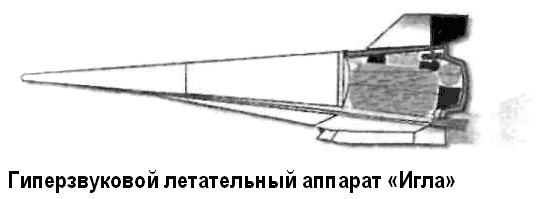

Программа «Холод»
Выше я уже упоминал, что с 1993 по 1996 год по заказу Российского космического агентства в рамках поддержанной государством научно-исследовательской и экспериментальной программы «Орел» проводились исследования тенденций развития и возможностей отечественных многоразовых средств космического выведения.
В результате было получено множество интересных предложений и проектов. Так, на основании теоретических изысканий КБ «Салют» разработало предложение по носителю с вертикальным стартом и горизонтальной посадкой, подобному американскому «Вентура Стар» («Venture Star»). КБ имени Макеева в инициативном порядке представило на суд комиссии проект легкой одноступенчатой многоразовой ракеты «Корона» с вертикальным стартом и посадкой, аналогичной американскому летательному аппарату «Дельта Клиппер» («Delta Clipper»). Однако для обоих отечественных проектов не проработано экономическое обоснование и не ясны источники финансирования.
Работа по теме «Орел» еще раз показала, что создание «реальных» экономически эффективных воздушно-космических систем возможно лишь с разработкой новых конструкционных материалов и многорежимных воздушно-реактивных двигателей. Поэтому Россия, несмотря на сегодняшние экономические трудности, осуществляет долгосрочную программу летных испытаний гиперзвуковых прямоточных воздушно-реактивных двигателей, известную под названием «Холод».
Первый ГПВРД был испытан в составе гиперзвуковой летающей лаборатории «Холод», созданной на базе зенитной ракеты ЗРК «С-200»: к маршевой ступени ракеты вместо боевой части пристыковываются головные отсеки лаборатории «Холод», в которых размещаются бортовая емкость с жидким водородом, система управления полетом, бортовая система измерений и передачи информации, система подачи жидкого водорода в камеру сгорания с регулятором расхода и, наконец, экспериментальный ГПВРД осесимметричной конструкции, расположенный в носовой части ракеты.
В такой конфигурации проведено пять полетов лаборатории «Холод». Максимальная достигнутая скорость полета составила 1855 м/с, что соответствует 6,49 Маха. Совершенная система охлаждения жидким водородом обеспечила работоспособность ГПВРД в течение заданных 77 секунд работы при температурах газов в камере выше 3300°К.
Успешные испытания ГПВРД привлекли к себе внимание и зарубежных разработчиков перспективных авиа-космических систем. Благодаря участию специалистов Франции и США удалось профинансировать ряд важных этапов программы.
На прошедшей в апреле 1998 года в США конференции по гиперзвуковым технологиям ученые и специалисты иностранных фирм дали высокую оценку результатам, полученным в ходе работ по программе «Холод».
В рамках научно-исследовательских работ по гиперзвуковым технологиям были созданы и создаются ГПВРД с кольцевыми и плоскими соплами, с центральным телом, на базе крылатых ракет, а также с аэродинамической схемой типа «несущий корпус». Разработаны и испытаны различные гиперзвуковые лаборатории, такие как: созданные МКБ «Радуга» «Модель-1» и «Модель-2» беспилотного гиперзвукового аппарата, испытания которых проводились в 1973–1978 и 1980–1985 годах соответственно; варианты гиперзвуковой лаборатории «Радуга Д2», созданные на базе крылатой ракеты «Х-22»; проект ЛИИ имени Громова «ВЛЛ-АС»; гиперзвуковые лаборатории «ГЛЛ-8» и «ГЛЛ-9», созданные ЛИИ имени Громова совместно с ЦИАМ и запускаемые ракетой «Рокот» по баллистической траектории.
Продолжением этих разработок стала гиперзвуковая летающая лаборатория «Игла», к разработке которой подключились НПО Машиностроения, КБ Автоматики, авиационные французские фирмы и Европейское Космическое агентство.

На базе этого проекта была разработана ракетно-космическая система скорой помощи «Призыв» для терпящих бедствие в рамках системы КОСПАС-САРСАТ.
Для демонстрации гиперзвуковых технологий НПО Машиностроения в 1995 году предложило аэро-космическую систему «Демонстратор» на базе самолета-носителя «Ил76МФ», несущего на себе беспилотный самолет-разгонщик с экспериментальным блоком или с ракетным блоком со спутником.
Все эти и другие разработки направлены на создание «РАКС» — национальной российской авиационно-космической системы многоразового использования. Понятно, что ее появление — дело будущего. Однако уже сейчас находятся энтузиасты, которые предлагают построить облегченный вариант «РАКС» на основе существующих технологий. Главной задачей этого варианта будет устроение аэро-космического ралли.